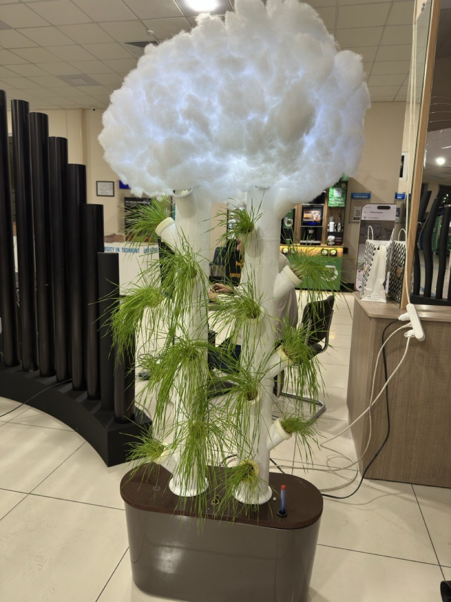
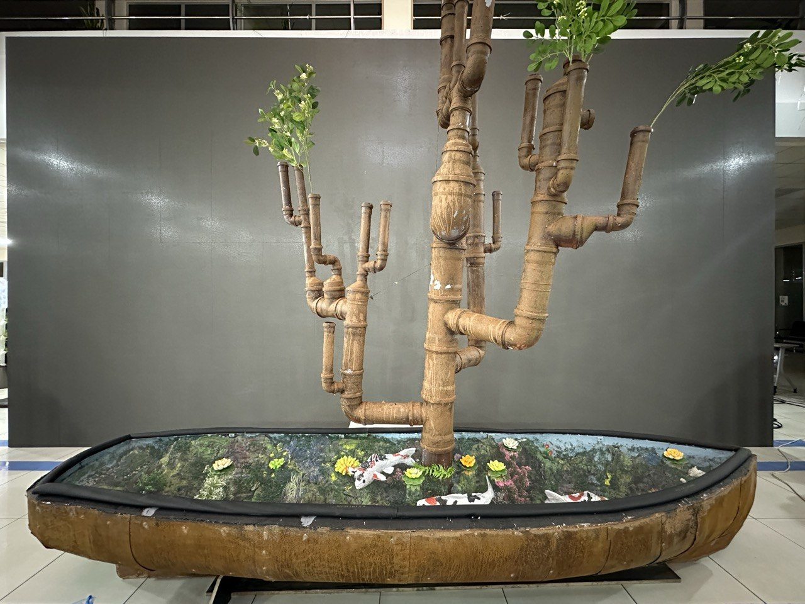
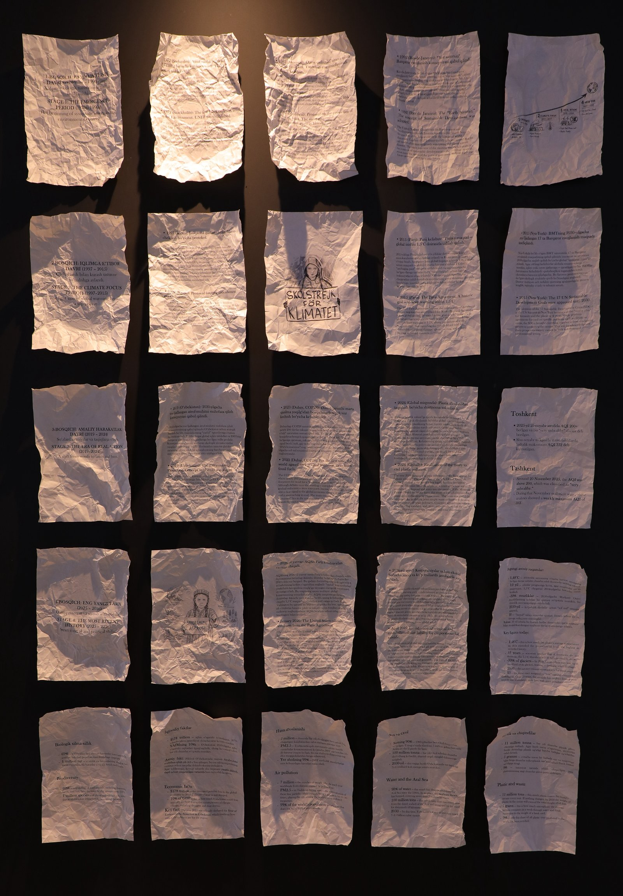
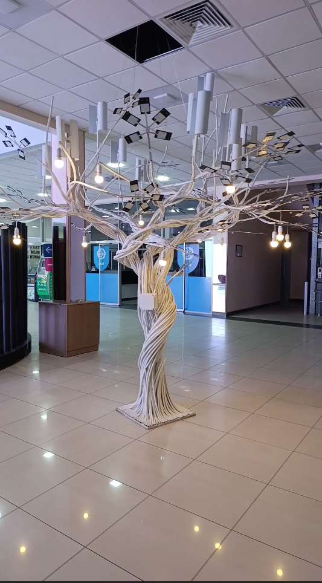
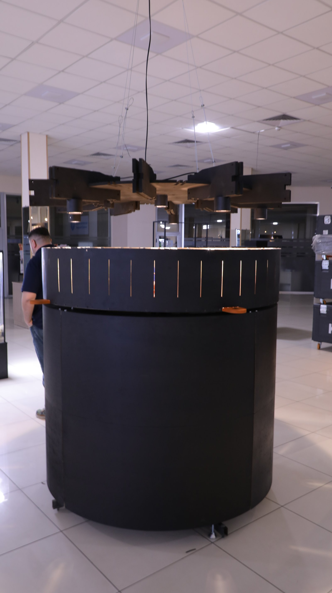

Art
Engineering
Season 2
Fourteen works, the slow labour of two years, return to KIUT for the second edition of Art Engineering. Under Prof. Djamshid Kaniev and the KIUT Engineering team, a turtle takes shape from bottles, a fish from wires, a cloud from pillow stuffing, a tree from rusted pipe. The exhibition is a call to save nature — not as a slogan, but in the small, patient grammar of what we still make with our hands.
Exhibition
Art Engineering
Season 2 · 20–25 April 2026
Season 2 · 20–25 April 2026
Main designer
Catalog
14 works
i.

Glass Current
2026
ii.

After the Drought
2026
iii.

Silicon Tide
2026
iv.

Behind the Veil
2026
v.

The Wounds of the City
2026
vi.

Inheritance
2026
vii.

The Music of Motion
2026
viii.

A Missing Climate
2026
ix.

Last of the Gilded
2026
x.

One Choice Apart
2026
xi.

Rust and Lily
2026
xii.

A Wall of Accords
2026
xiii.

The Renewable Tree
2026
xiv.

The Living Wheel
2026